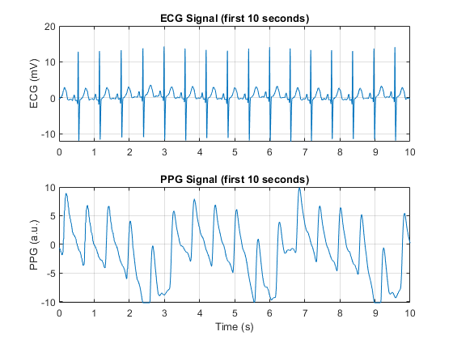

Contents
fs = 300; % Sampling frequency (Hz) filename = 'doi-10.5683-sp2-nlb8it (1)/data/csv/0009_8min_signal.csv'; % Read CSV file as a table dataTable = readtable(filename); % Extract PPG and ECG signals ppg = dataTable.pleth_y; ecg = dataTable.ecg_y; % Build time axis n_samples = length(ppg); t = (0:n_samples-1)' / fs; fprintf('Number of samples: %d\n', n_samples); fprintf('Signal duration: %.2f seconds\n', n_samples/fs);
Number of samples: 144001 Signal duration: 480.00 seconds
Plot full ECG and PPG signals
figure; subplot(2,1,1); plot(t, ecg); ylabel('ECG (mV)'); title('ECG Signal (first 10 seconds)'); grid on; xlim([0 10]) subplot(2,1,2); plot(t, ppg); ylabel('PPG (a.u.)'); xlabel('Time (s)'); title('PPG Signal (first 10 seconds)'); grid on; xlim([0 10])
